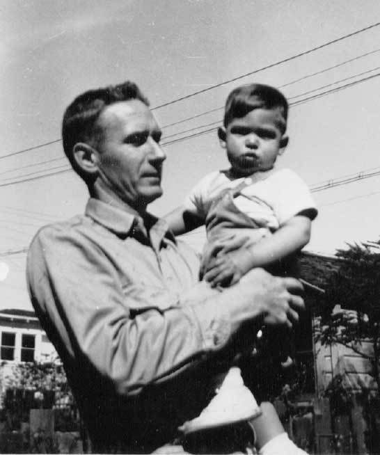
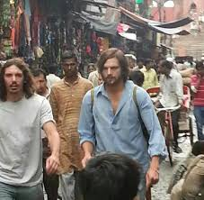

và những cống hiến của ông cho ngành Khoa Học Máy Tính
Giai đoạn 1955-1972
 Hình 3: Jobs và người bố nuôi
Steve Jobs được Paul và Clara nhận nuôi thông qua Cô của Jobs là Patriccia năm 1957. Sau đó Jobs theo bố mẹ nuôi chuyển đến Moutain View, California năm 1961. Khi còn bé Jobs đã cùng bố Paul tìm hiểu về các thiết bị điện tử. Khi lên mười, ông đã có sự am hiểu khá tốt về các thiết bị điên tử và “kết bạn” với nhiều kĩ sư trong khu phố. Tuy nhiên. điều đó cúng khiến Jobs gặp khó khăn để làm quen với những nguời bạn cùng chan lứa. Ông được bạn bè trong lớp gọi là nguời cô đơn ( loner). Jobs cũng gặp khá nhiều khó khăn khi học ở lớp với những môn học truyền thống và cứng nhắc. Tuy nhiên ông luôn nhận được sự ủng hộ của bố là Paul. Điều đó đã góp phần tạo nên sự sáng tạo, phá cách và táo bạo của Jobs sau này. Do các bất đông giữa Jobs và nhà trường nên bố mẹ Jobs đã quyết đinh chuyển nhà đến Crist Drive ở Los Altos, California. Tại đây Jobs học theo học tại trường trung học Cupertino và Homestead. Sau giờ học, ông thường đến công ty Hewlett-packard tại Palo Alto, California. Ông nhanh chóng được thuê vào làm việc cùng Steve Wozniak trong vài trò là nhân viên thời vụ mùa hè.
 Hình 4: Jobs trong chuyến đi đến Ấn Độ
Năm 1972, Jobs tốt nghiệp trung học và ghi danh học tại Reed Collede, một trong số 10 đại học mỹ thuật hàng đầu của Hoa Kỳ ở thành phố Portland, tiểu bang Oregon. Mặc dù Steve Jobs bỏ học sau chỉ một học kì bán niên ( Semester) vì học phí đại học tư quá cao, ông vẫn tiếp tục đi dự thính các lớp học tại Reed trong khi phải ngủ dưới sàn nhà của một người bạn, dổi lon nước ngọt để lấy tiền ăn và nhận các suất ăn miễn phí mỗi tuần tại đền Hare Krishma. Sau này Jobs bày tỏ rằng: “ Nếu tôi chưa từng dự lớp học thư pháp riêng lẻ đó tại đại học thì Mac sẽ không bao giời có kiểu hay phông chữ có tỉ lệ cân xứng như vậy”. Mùa thu năm 1974, Jobs quay trở lại California và bắt đầu tham dự các buổi gặp mặt của câu lạc bộ Homebrewe Computer cùng với Wozniak. Ông làm kĩ sư cho hãng Atari, một hãng sản xuất trò chơi điện tử, đồng thời tích góp tiền bạc cho chuyến đi thần thánh sang Ấn Độ. Chuyến đi đó có thể được xem là một bệ phóng để nâng tầm trực giác và thành công của Jobs sau này.